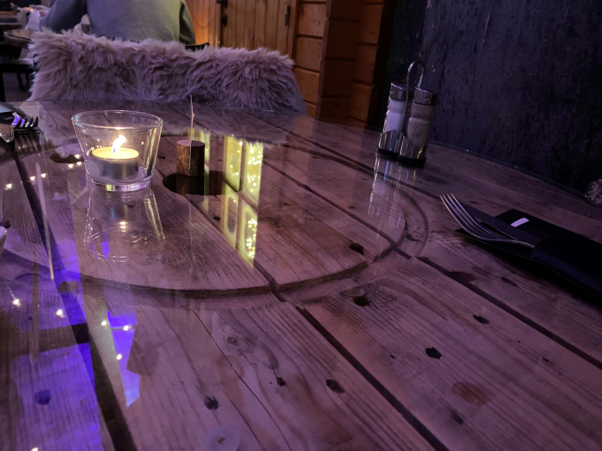

46, Rue de l'Industrie
Une tour réhabilitée.
46 Am Tuerm occupe une ancienne tour industrielle au cœur de Diekirch. Pierre apparente, briques, bois de pin au plafond et aux murs : un décor cosy-industriel entièrement accordé au patrimoine de la ville.
Les grandes tables rondes sont d'anciens tourets à câble posés sous verre ; les chaises portent des plaids en fourrure, les guirlandes et les bougies réchauffent la pierre, et une tête de cerf veille sur la salle baignée d'une lumière violette au soir tombé.
46le numéro de la rue
Tuerm« la tour » en luxembourgeois
~4,4★Google & RestaurantGuru · à revérifier